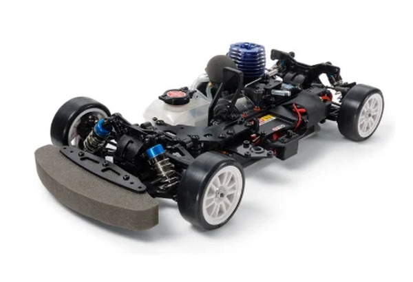

タミヤ TG10-Mk.2 FZ

引用元画像：タミヤ公式サイト
📋 基本情報
| メーカー | タミヤ（Tamiya） |
|---|---|
| 機種名 | TG10-Mk.2 FZ |
| 型番 | 44052（シャーシキット） |
| 発売時期 | 2015年6月27日 |
| 生産状況 | 生産終了 |
| カテゴリー | ラジコンカー（1/10スケール エンジンRCカー） |
| サブカテゴリー | グローエンジンカー（オンロード・ツーリング・レース仕様） |
📏 シャーシスペック
| 全長 | 377mm |
|---|---|
| 全幅 | 198～202mm（可変） |
| ホイールベース | 257mm |
| トレッド | 前後共172～176mm（可変） |
| タイヤ幅/径 | 24/65mm（ファイバーモールドタイヤ） |
| フレーム | 3mm厚ジュラルミン製ロワ＋樹脂製アッパーのダブルデッキ |
⚙️ 駆動系
| 駆動方式 | シャフトドライブ4WD |
|---|---|
| デフギヤ | フロント4ベベル / リヤ2ベベル |
| ギヤ比 | 7.02:1（1速） / 5.42:1（2速） |
| トランスミッション | 2スピード |
| ベアリング | フルベアリング仕様 |
| エンジン | タミヤ FS-12FZ（2.1cc） |
| マフラー | TM-8 |
| 燃料タンク | 75cc |
🔧 サスペンション
| 形式 | 4輪ダブルウィッシュボーン |
|---|---|
| ダンパー | フッソコート仕上げアルミシリンダー製オイルダンパー |
| ステアリング | 3分割タイロッド |
💡 特徴
1/10エンジンカー用シャフトドライブ4WDシャーシ
- 3mm厚のジュラルミン製ロワ、樹脂製アッパーの高剛性ダブルデッキフレーム
- ファイバーモールドタイヤにあわせたサスペンションジオメトリーを採用
- フルベアリング装備でパワーをロスなく伝達
高性能FS-12FZエンジン搭載
- 排気量2.1ccのFS-12FZエンジンを搭載
- リニアなトルク特性と高速サーキットに適した高出力を両立
- テーパー形状のスライドキャブレター
- 効率的な放熱を実現するヒートシンク
- 調整しやすく扱いやすい特性
- リコイルスターター付きで始動が簡単
レース志向の高性能仕様
- 2スピードミッション標準装備で圧倒的な加速と最高速を実現
- フッソコート仕上げのアルミシリンダー製オイルダンパーで滑らかな動き
- ファイバーモールドタイヤ専用のジオメトリー設計
- フルベアリング仕様で効率的な駆動
優れた拡張性
- 豊富なTG10-Mk.2シリーズのオプションパーツが使用可能
- レース向けチューニングパーツが充実
- 本格的なレース参戦にも対応
🔧 ぽすとそに工房での修理実績
修理難易度
★★★☆☆（普通、たまにヤフオクなどでパーツがみつかりますが、少し時間などがかかります）
よくある故障・注意点
- 2スピードトランスミッションの調整が難しい
- エンジンのセッティングに経験が必要
- ファイバーモールドタイヤ用のジオメトリーのため、通常タイヤだと性能が出にくい
- 高性能エンジンのため慣らし運転が重要
- 燃料系統の定期的なメンテナンスが必須
- オイルダンパーのメンテナンスが重要
修理のポイント
- 2スピードトランスミッションの調整方法を理解する
- エンジンのキャブレター調整（ハイ/ロー ニードル）を丁寧に行う
- オイルダンパーのオイル交換とシール類の点検
- フルベアリングの状態確認と清掃
- エンジンの慣らし運転を適切に実施
- 燃料系統のゴム部品の定期交換
その他の特徴
- レース志向の中～上級者向けモデル
- ファイバーモールドタイヤでのレース走行に最適
- 細かなセッティングで性能を引き出せる
- 修理にはエンジンカーの専門知識が必須